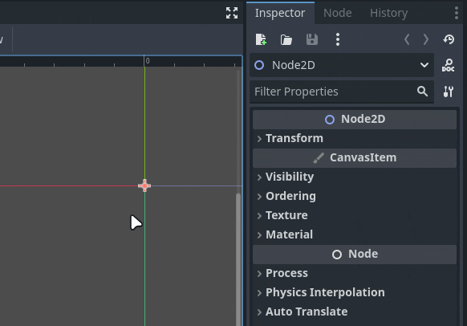
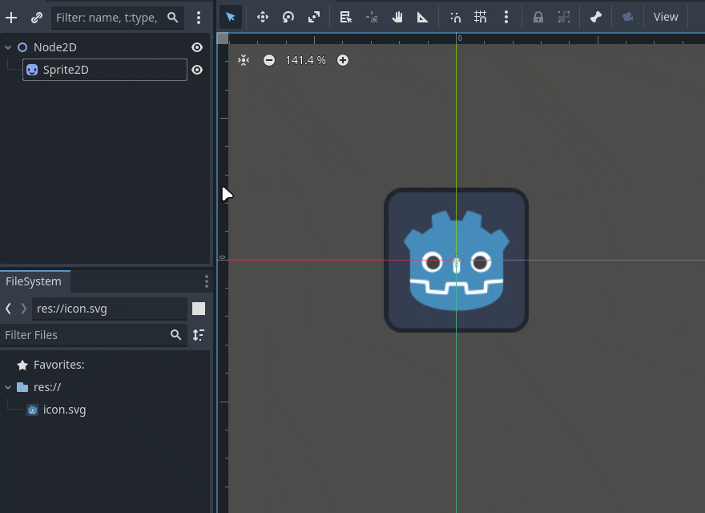
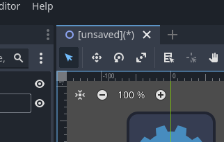

2 - Noder og Scener
Introduksjon til noder i Godot
Scener i Godot er bygd opp av noder i en trestruktur. Noder er objekter med en rekke attributter. Det finnes hundrevis av forskjellige noder, og du kan definere dine egne typer, men dette skal vi se på senere. Den første noden i en scene kalles root node, og alle andre noder i scenen stammer fra den. Så før du kan gjøre noe som helst med scenen din, må du opprette en root node.
Vi begynner vanligvis med en av de grunnleggende nodene som Godot foreslår når vi åpner en tom scene.

Om vi nå tar en titt i inspektøren på høyre side, kan vi se
attributtene til Node2D. Om du ikke ser noe her, klikk
på Node2D i scenelisten for å velge den.
Node2D er kun et punkt, med de mest grunnleggende
attributtene som alle 2D-noder har: Posisjon,
Rotasjon, Størrelse og
Skew. Siden Node2D kun er et punkt og ikke
har noen form, er det foreløpig kun posisjon og rotasjon som gir synlige
endringer.

Hver gang du endrer på attributter, vil du se at det dukker opp en rund pil ⟲. Klikk på denne for å sette verdiene tilbake til standard.
Legge til en Sprite2D-node
Nå skal vi legge til en Sprite2D-node. Klikk på
+ øverst i venstre hjørne av scenepanelet, finn
Sprite2D i listen og klikk på Create. Nå
har du en tom Sprite2D, og vi kan umiddelbart gi den en
tekstur for å gjøre den synlig. Klikk i feltet hvor det står

Om vi ser på inspektøren mens Sprite2D er valgt, legger
vi merke til at den har Transform (posisjon, rotasjon,
etc.), akkurat som Node2D, men i tillegg har den flere
attributter som er unike for Sprite2D:
Texture, Offset,
Animation og Region.

Tips: Alle noder med blå ikoner er
2D-noder, som alle bygger på Node2D. Det finnes også:
- Røde ikoner: 3D-noder
- Grønne ikoner: GUI-noder
- Hvite ikoner: Spesialnoder
- Noen noder har flerfargede ikoner, noe som betyr at de kan brukes både i 2D, 3D eller flere kontekster.

Arv
Nå skal vi bruke Move Mode til å flytte litt på nodene våre.

Legg merke til at når vi flytter Node2D, følger
Sprite2D med. Men når vi flytter Sprite2D,
forblir Node2D på plass. Dette skyldes arv
– en node arver attributtene fra noden den ligger under.
Tenk deg at vi lager en planet og plasserer en person på den. Når vi flytter planeten, blir personen med, men personen kan bevege seg uten at planeten følger etter.

Vi kan se hvilke noder som arver fra andre ved å se på linjen til
venstre for noden i scenelisten. Her ser vi at Sprite2D
peker opp på Node2D.

Arv gjelder også størrelse. Hvis vi skalerer Node2D,
blir alle noder under den også større.
Lagre og kjøre scenen
Over viewporten finner vi fanene for åpne scener. Her ser vi scenen vi har jobbet på. Den heter [unsaved] fordi vi ikke har lagret den ennå. Symbolet _(*)_ betyr at vi har ulagrede endringer.

For å lagre scenen går du til Scene > Save Scene, eller bruk Ctrl+S.
Gi scenen et navn – hvis ikke, får den navnet til den første noden i scenen, noe som kan bli rotete i lengden.

Når scenen er lagret, vil den vises blant prosjektfilene våre. Høyreklikk på den og velg Set as Main Scene. Du kan kun ha én Main Scene i prosjektet ditt – dette er scenen spillet starter med.

Nå kan vi klikke på Run Project ► øverst til høyre.

Da får vi opp et vindu som vil se omtrent slik ut – dette er spillet vårt i kjøring.

Husk at koordinatene X = 0 og Y = 0 er øverst til venstre i vinduet. Det spilleren skal se, må være innenfor den blå firkanten i viewporten.